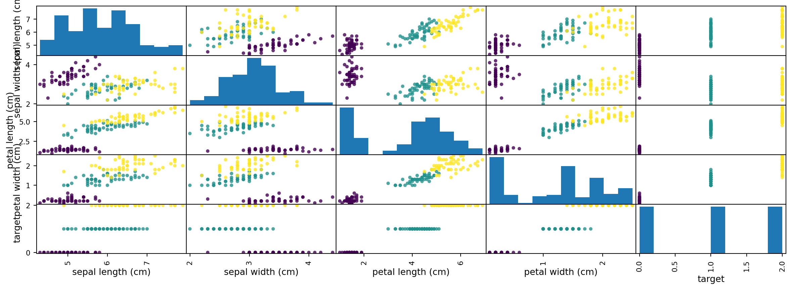
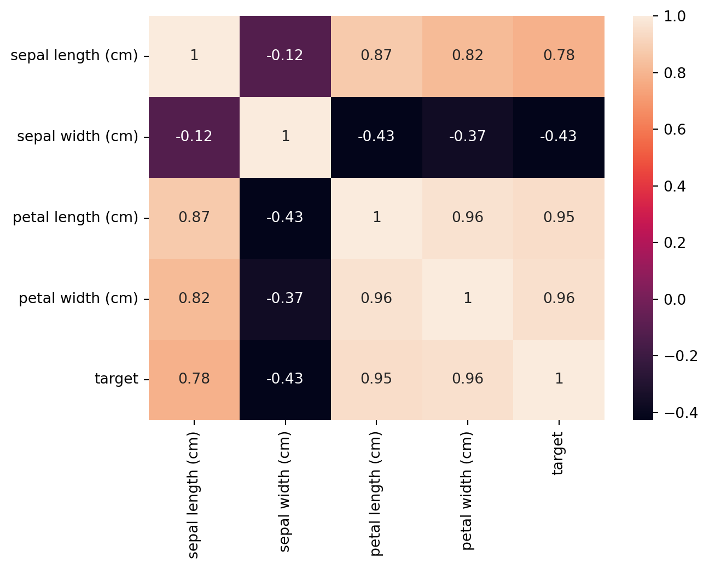
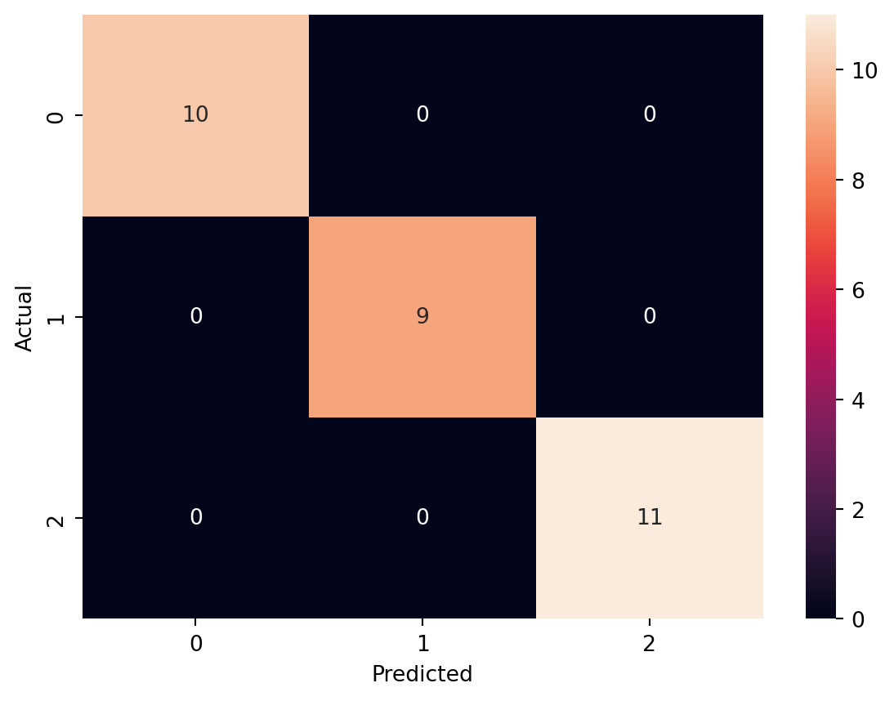

import numpy as np
import pandas as pd
import matplotlib.pyplot as plt
import seaborn as sns
from sklearn.model_selection import train_test_splitUnderstanding Naive Bayes Algorithm
It is an algorithm that learns the probability of every object, its features, and which groups they belong to. It is also known as a probabilistic classifier. The Naive Bayes Algorithm comes under supervised learning and is mainly used to solve classification problems.
For example, you cannot identify a bird based on its features and color as there are many birds with similar attributes. But, you make a probabilistic prediction about the same, and that is where the Naive Bayes Algorithm comes in.  ## Probability, Bayes Theory, and Conditional Probability Probability is the base for the Naive Bayes algorithm. This algorithm is built based on the probability results that it can offer for unsolvable problems with the help of prediction. You can learn more about probability, Bayes theory, and conditional probability below: ### Probability Probability helps to predict an event’s occurrence out of all the potential outcomes. The mathematical equation for probability is as follows: \[ P(E) = \frac{No. of events}{ Total no. of outcomes}\] \[ 0\le P(E)\le1\] The favorable outcome denotes the event that results from the probability. Probability is always between 0 and 1, where 0 means no probability of it happening, and 1 means the success rate of that event is likely.
## Probability, Bayes Theory, and Conditional Probability Probability is the base for the Naive Bayes algorithm. This algorithm is built based on the probability results that it can offer for unsolvable problems with the help of prediction. You can learn more about probability, Bayes theory, and conditional probability below: ### Probability Probability helps to predict an event’s occurrence out of all the potential outcomes. The mathematical equation for probability is as follows: \[ P(E) = \frac{No. of events}{ Total no. of outcomes}\] \[ 0\le P(E)\le1\] The favorable outcome denotes the event that results from the probability. Probability is always between 0 and 1, where 0 means no probability of it happening, and 1 means the success rate of that event is likely.
For better understanding, you can also consider a case where you predict a fruit based on its color and texture. Here are some possible assumptions that you can make. You can either choose the correct fruit that you have in mind or get confused with similar fruits and make mistakes. Either way, the probability of choosing the right fruit is 50%. ### Bayes Theory Bayes Theory works on coming to a hypothesis (H) from a given set of evidence (E). It relates to two things: the probability of the hypothesis before the evidence P(H) and the probability after the evidence P(H|E). The Bayes Theory is explained by the following equation: \[ P(H|E) = \frac{P(E|H)*P(H)}{P(E)}\] Where, - \(P(H|E)\) denotes how event H happens when event E takes place. - \(P(E|H)\) represents how often event E happens when event H takes place first. - \(P(H)\) represents the probability of event X happening on its own. - \(P(E)\) represents the probability of event Y happening on its own.
The Bayes Rule is a method for determining \(P(H|E)\) from \(P(E|H)\). In short, it provides you with a way of calculating the probability of a hypothesis with the provided evidence. ### Conditional Probability Conditional probability is a subset of probability. It reduces the probability of becoming dependent on a single event. You can compute the conditional probability for two or more occurrences.
When you take events X and Y, the conditional probability of event Y is defined as the probability that the event occurs when event X is already over. It is written as P(Y|X). The mathematical formula for this is as follows: \[P(Y|A) = \frac{P(X and Y)}{P(X)}\] ### Bayesian Probability Bayesian Probability allows to calculate the conditional probabilities. It enables to use of partial knowledge for calculating the probability of the occurrence of a specific event. This algorithm is used for developing models for prediction and classification problems like Naive Bayes.
The Bayesian Rule is used in probability theory for computing - conditional probabilities. What is important is that you cannot discover just how the evidence will impact the probability of an event occurring, but you can find the exact probability.
How Naive Bayes Classifier works?
We will now try to build a classification model that uses Sklearn to see how the Naive Bayes Classifier works. For instance, we will train a Naive Bayes algorithm on the famous Iris Dataset. The objective of our algorithm would be to classify flowers into three categories Setosa, Versicolor, and Virginica. ##### 1. Import basic libraries
2. Load the dataset and visualise it
from sklearn import datasets
iris = datasets.load_iris()
X= iris.data[:,]
y=iris.target
print('Features : ', iris['feature_names'])
iris_dataframe = pd.DataFrame(data=np.c_[iris['data'],iris['target']], columns= iris['feature_names']+['target'])
plt.figure()
grr = pd.plotting.scatter_matrix(iris_dataframe, c=iris['target'], figsize=(15, 5), s=60, alpha=0.8)
plt.show()Features : ['sepal length (cm)', 'sepal width (cm)', 'petal length (cm)', 'petal width (cm)']<Figure size 672x480 with 0 Axes>
dataplot=sns.heatmap(iris_dataframe.corr(),annot=True)
plt.show()
We can see that the features are highly correlated. But as per Naive Bayes assumption, it will treat features as entirely independent of each other. ##### 3. Split the dataset
X_train, X_test, y_train, y_test= train_test_split(X,y,test_size=0.2, random_state=42)4. Fit the Model
from sklearn.naive_bayes import GaussianNB
NB = GaussianNB()
NB.fit(X_train, y_train)GaussianNB()In a Jupyter environment, please rerun this cell to show the HTML representation or trust the notebook.
On GitHub, the HTML representation is unable to render, please try loading this page with nbviewer.org.
GaussianNB()
5. Evaluate the model
We will use confusion matrix to evalute the model
Y_pred= NB.predict(X_test)
from sklearn.metrics import confusion_matrix
cm=confusion_matrix(y_test, Y_pred)
df_cm = pd.DataFrame(cm, columns=np.unique(y_test), index=np.unique(y_test))
df_cm.index.name='Actual'
df_cm.columns.name='Predicted'
sns.heatmap(df_cm, annot=True)
plt.show<function matplotlib.pyplot.show(close=None, block=None)>
Types of Naive Bayes Model
There are four types of the Naive Bayes Model, which are explained below: 
1. Gaussian Naive Bayes
It is a straightforward algorithm used when the attributes are continuous. The attributes present in the data should follow the rule of Gaussian distribution or normal distribution. It remarkably quickens the search, and under lenient conditions, the error will be two times greater than Optimal Naive Bayes.
2. Optimal Naive Bayes
Optimal Naive Bayes selects the class that has the greatest posterior probability of happenings. As per the name, it is optimal. But it will go through all the possibilities, which is very slow and time-consuming.
3. Bernoulli Naive Bayes
Bernoulli Naive Bayes is an algorithm that is useful for data that has binary or boolean attributes. The attributes will have a value of yes or no, useful or not, granted or rejected, etc.
4. Multinominal Naive Bayes
Multinominal Naive Bayes is used on documentation classification issues. The features needed for this type are the frequency of the words converted from the document.
Advantages of a Naive Bayes Classifier
Here are some advantages of the Naive Bayes Classifier:
It doesn’t require larger amounts of training data.
It is straightforward to implement.
Convergence is quicker than other models, which are discriminative.
It is highly scalable with several data points and predictors.
It can handle both continuous and categorical data.
It is not sensitive to irrelevant data and doesn’t follow the assumptions it holds.
It is used in real-time predictions. ### Disadvantages of a Naive Bayes Classifier The disadvantage of the Naive Bayes Classifier are as below:
The Naive Bayes Algorithm has trouble with the ‘zero-frequency problem’. It happens when you assign zero probability for categorical variables in the training dataset that is not available. When you use a smooth method for overcoming this problem, you can make it work the best.
It will assume that all the attributes are independent, which rarely happens in real life. It will limit the application of this algorithm in real-world situations.
It will estimate things wrong sometimes, so you shouldn’t take its probability outputs seriously. ### Applications that use Naive Bayes The Naive Bayes Algorithm is used for various real-world problems like those below:
Text classification: The Naive Bayes Algorithm is used as a probabilistic learning technique for text classification. It is one of the best-known algorithms used for document classification of one or many classes.
Sentiment analysis: The Naive Bayes Algorithm is used to analyze sentiments or feelings, whether positive, neutral, or negative.
Recommendation system: The Naive Bayes Algorithm is a collection of collaborative filtering issued for building hybrid recommendation systems that assist you in predicting whether a user will receive any resource.
Spam filtering: It is also similar to the text classification process. It is popular for helping you determine if the mail you receive is spam.
Medical diagnosis: This algorithm is used in medical diagnosis and helps you to predict the patient’s risk level for certain diseases.
Weather prediction: You can use this algorithm to predict whether the weather will be good.
Face recognition: This helps you identify faces. ## Conclusion Though the Naive Bayes Algorithm has a lot of limitations, it is still the most chosen algorithm for solving classification problems because of its simplicity. It works well on spam filtering and the classification of documents. It has the highest rate of success when compared to other algorithms because of its speed and efficiency.